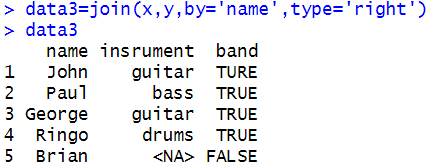
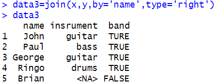

数据集成
(1) 直接纵向合并
在R中构造两个数据集sduent1,sduent2，列变量分别为ID、name，由于所构建的数据集的列变量名都相同，使用函数rbind()将两个数据集纵向合并，代码如下：
(2)间接纵向合并
使用的数据集是来自某股票软件2017/11至2019/2的300个来自不同股份的证券数据，其中包括日期、开盘价、最高价、最低价、收盘价、成交量以及成交额这六个变量。
通过观察数据发现，所有的证券数据第一行与最后一行都有其证券名称以及数据来源，如下图。

显然，在数据合并的过程中，这些信息是没有价值的，因此在进行数据合并的过程中需要根据具体情况对原数据稍加处理。运行结果如下：
最终合并的结果如下：
通过观察数据发现，所有的证券数据第一行与最后一行都有其证券名称以及数据来源，如下图。
显然，在数据合并的过程中，这些信息是没有价值的，因此在进行数据合并的过程中需要根据具体情况对原数据稍加处理。运行结果如下：
最终合并的结果如下：
(3)横向合并
在R中构建两个数据集x和y，列变量名分别为name、instrument和name、band，以name为合并字段，运行结果如下：
1.内连接(只合并交集)
对比原始的两个数据集与内连接的合并结果，数据集x和y中共同都存在的变量name为John,Paul,George以及Ringo,达到了只合并交集的作用。
2.左外连接
对比原始的两个数据集与左外连接的合并结果，左外连接是以数据集x中的
变量name进行拼接的；需要注意的是：Stuart与Pete在y中并没有对应的band元素,故join函数会自动以缺失值NA补全数据集。
3.右外连接

对比原始的两个数据集与右外连接的合并结果，右外连接是以数据集y中的变量name进行合并,同样由于Brian在数据集x中insrument变量没有对应的元素,故以缺失值NA补全数据集。
4.全连接
对比原始的两个数据集与全连接的合并结果，全连接是以变量name为匹配字段，将数据集x和y进行横向合并，缺失值以NA补齐。
1.内连接(只合并交集)
对比原始的两个数据集与内连接的合并结果，数据集x和y中共同都存在的变量name为John,Paul,George以及Ringo,达到了只合并交集的作用。
2.左外连接
对比原始的两个数据集与左外连接的合并结果，左外连接是以数据集x中的
变量name进行拼接的；需要注意的是：Stuart与Pete在y中并没有对应的band元素,故join函数会自动以缺失值NA补全数据集。
3.右外连接

对比原始的两个数据集与右外连接的合并结果，右外连接是以数据集y中的变量name进行合并,同样由于Brian在数据集x中insrument变量没有对应的元素,故以缺失值NA补全数据集。
4.全连接
对比原始的两个数据集与全连接的合并结果，全连接是以变量name为匹配字段，将数据集x和y进行横向合并，缺失值以NA补齐。